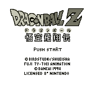
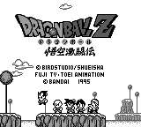

Dragonball (Z) - Gameboy Games
Table of Contents
|
Series Information
|
Gameboy Games
|
Genesis Games
Nintendo Games
|
PC Games
|
SNES Games
Goku Hishouden
|
Goku Gekitouden
Dragonball Z: Goku Hishouden

Genre:
Turn-based fighting game
Game review
at
Kai-oh-shin's Planet
Controls
A button
: Select an attack/defense
B button
: Undo last selection
Start
: [not used]
Select
: [not used]
Dragonball Z: Goku Gekitouden

Genre:
Turn-based fighting game
Game review
at
Kai-oh-shin's Planet
Anime Video Game Resource Center © 1998 by
Luis A. Cruz